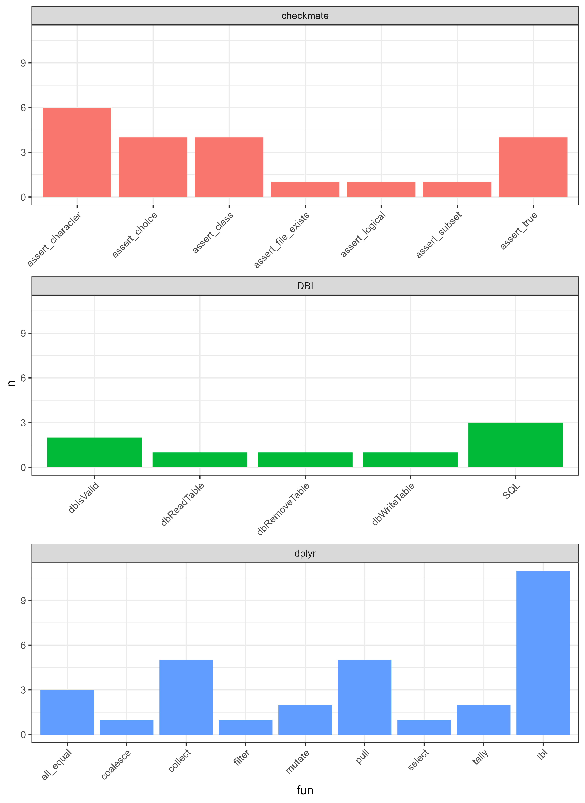
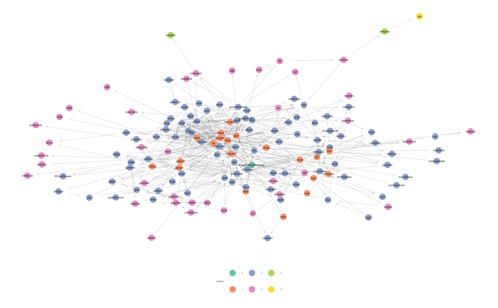
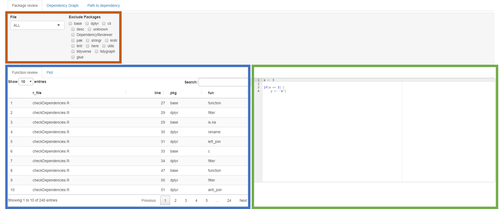

Documentation
Documentation.RmdInstallation
Before anything, make sure the DependencyReviewer package is installed.
remotes
The latest version is usually available on GitHub, and is installable with the remotes package.
# If you do not have remotes installed:
install.packages("remotes")
# Install DependencyReviewer with remotes:
remotes::install_github("darwin-eu/DependencyReviewer")install.packages
DependencyReviewer 1.0.0 is also available on CRAN, and can
be installed using install.packages as well.
install.packages("DependencyReviewer")Usage
getDefaultPermittedPackages
What does it do?
The getDefaultPermittedPackages function retrieves a
list of packages from several on,- and offline data sources. These data
sources include:
- Base packages with a high priority
installed.packages(lib.loc = .Library, priority = "high") - Tidyverse packages
- OHDSI/HADES packages
- Packages hosted on the DependencyReviewerWhitelists repository
- Finally the function will also retrieve the defined packages’ dependencies recursively, and add them to the list.
These packages are deemed OK to use. This list will, and should change overtime as packages become outdated, get replaced, or added to the list.
What does it return?
getDefaultPermittedPackages returns a class of
data.frame with columns: package
datatable(getDefaultPermittedPackages())
#>
[36mℹ
[39m Loading metadata database
[36mℹ
[39m Loading metadata database
[32m✔
[39m Loading metadata database ... done
[32m✔
[39m Loading metadata database ... done
#>
#> Writing temp filecheckDependencies
What does it do?
Now that we have defined our ‘whitelisted’ packages,
checkDependencies allows us to check our currently used
dependencies against it. checkDependencies will run
getDefaultPermittedPackages internally so there is no need
to run the two separately to check your dependencies against the white
list.
What does it need?
checkDependencies has two optional arguments:
packageName default (
NULL): Expects a character string of a package name. Example: “ggplot2”.dependencyType default (
c("Imports", "Depends")): Expects a character vector of at least length 1 of dependency types. The supported types are: “Imports”, “Depends”, and “Suggests”.
Because both arguments are optional it can also be run without specifying anything. The function will then assume that it is run inside a package-project environment. This is specifically useful when working on, or reviewing a package.
What does it return?
checkDependencies prints out a message in the console
that informs the user if all their used package dependencies are
whitelisted or not. If not it instructs the user where to go to request
the packages to be whitelisted.
# Assumes the current environment is a package-project
# Defaults are: packageName = NULL, packageTypes = c("Imports", "Depends")
checkDependencies()
# Check dependencies for installed package "CDMConnector"
checkDependencies(
packageName = "CDMConnector")- If packages are not approved yet:
# Check Imports and Suggests
checkDependencies(
packageName = "CDMConnector",
dependencyType = c("Imports", "Suggests"))
#> Get from temp file
#>
#> ── Checking if packages in Imports and Suggests have been approved ──
#>
#> ! Found 5 packages in Imports and Suggests that are not
#> approved
#> → 1) covr
#> → 2) duckdb
#> → 3) odbc
#> → 4) RPostgres
#> → 5) testthat
#> ! Please create a new issue at https://github.com/mvankessel-EMC/DependencyReviewerWhitelists/ to request approval for packages with the following message:
#> → |package |version |date | downloads_last_month|license |url |
#> |:---------|:-------|:-------------------|--------------------:|:------------------|:---------------------------------------------------------------|
#> |covr |3.6.1 |2022-08-26 19:24:34 | 264276|MIT + file LICENSE |https://covr.r-lib.org, https://github.com/r-lib/covr |
#> |duckdb |0.6.0 |2022-11-25 12:20:02 | 10400|MIT + file LICENSE |https://duckdb.org/, https://github.com/duckdb/duckdb |
#> |odbc |1.3.3 |2021-11-30 08:10:02 | 95759|MIT + file LICENSE |https://github.com/r-dbi/odbc, https://db.rstudio.com |
#> |RPostgres |1.4.4 |2022-05-02 07:50:05 | 54100|GPL-3 |https://rpostgres.r-dbi.org, https://github.com/r-dbi/RPostgres |
#> |testthat |3.1.5 |2022-10-08 05:40:02 | 907811|MIT + file LICENSE |https://testthat.r-lib.org, https://github.com/r-lib/testthat |As you can see, it returns a list of all the packages that are not white listed. Below the list it will display some information in a markdown table format. This will come in handy later on. The table has six columns: 1) package, 2) version, 3) date, 4) downloads_last_month, 5) license, and 6) url.
Note that only packages available on CRAN are reported in the table. Non-CRAN packages will still show up in the list.
- If all packages are approved:
# Only check directly imported dependencies of installed package "CDMConnector"
checkDependencies(
packageName = "CDMConnector",
dependencyType = c("Imports"))
#> Get from temp file
#>
#> ── Checking if package in Imports have been approved ──
#>
#> ✔ All package in Imports are already approvedNotice how “Imports” and “Depends” packages of CDMConnector are whitelisted, but “Suggests” packages are not.
Requesting packages to be whitelisted
If you find that some packages are not yet whitelisted, you can request them to be. The DependencyReviewerWhitelists repository on GitHub houses the white list for DependencyReviewer.
To request new packages a new issue can be created on this repository.
Assuming we have the following output from
checkDependencies:
Get from temp file
── Checking if packages in Imports and Suggests have been approved ──
! Found 3 packages in Imports and Suggests that are not
approved
→ 1) GGally
→ 2) lintr
→ 3) pak
! Please create a new issue at https://github.com/mvankessel-EMC/DependencyReviewerWhitelists/ to request approval for packages with the following message:
|package |version |date | downloads_last_month|license |url |
|:-------|:-------|:-------------------|--------------------:|:------------------|:----------------------------------------------------------------|
|GGally |2.1.2 |2021-06-21 03:40:10 | 86657|GPL (>= 2.0) |https://ggobi.github.io/ggally/, https://github.com/ggobi/ggally |
|lintr |3.0.2 |2022-10-19 08:52:37 | 61729|MIT + file LICENSE |https://github.com/r-lib/lintr, https://lintr.r-lib.org |
|pak |0.3.1 |2022-09-08 20:30:02 | 39420|GPL-3 |https://pak.r-lib.org/ |When creating a new issue, a request template is available.
Request template button
This template asks for some basic information about the requested packages, and a reason as to why the requested packages should be whitelisted.

Request template
Initially it displays some dummy information as to what a request might look like.
Firstly it asks us is to supply a table in markdown format with some
basic information about the packages. We can copy this from the output
message from the checkDependencies function.
Then it asks us to give a description as to why we would like these packages to be whitelisted.
Finally, we can add some additional information if required.
Request filled out
We can then preview our request issue:
Request preview
If everything looks good, we can submit the issue.
summariseFunctionUse
What does it do?
summariseFunctionUse goes through all specified R-files
and attempts to list all the functions used in those files. It will also
report in what file the function was found, at what line number the
function call was found, and from which package the function comes
from.
What does it need?
summariseFunctionUse has several optional arguments:
r_files default (list.files(here::here(“R”))): If
in_package = TRUEexpects a character vector of at least length 1 of file names in the /R/ folder. Ifin_package == FALSEexpects full paths to the R-files.verbose default (FALSE): If
verbose = TRUEwill print messages in the console on which file the function is currently working. Useful when reviewing large R-files. Ifverbose = FALSEwill not print said messages.in_package default (TRUE): If
in_package = TRUEwill expect that the function is run inside a package-project. Ifin_package = FALSEwill expect that the function is run outside a package-project and will expect full file paths to the files reviewed.
By default summariseFunctionUse will expect that it is
ran inside a package-project and will look at the /R/ folder
inside the project.
What does it return?
summariseFunctionUse returns a class of data.frame with
the following columns: 1) r_file, 1)
line, 1) pkg, 1) fun.
# Assumes the function is run inside a package-project.
datatable(
summariseFunctionUse())
# Any other R-file, with verbose messages
foundFuns <- summariseFunctionUse(
r_files = "../../CDMConnector/R/cdm.R",
verbose = TRUE,
in_package = FALSE)
#> Started on file: ../../CDMConnector/R/cdm.R
datatable(foundFuns)The found functions can then be plotted out for each package. For the sake of this demonstration, only a few packages will be plotted.
funCounts <- foundFuns %>%
group_by(fun, pkg, name = "n") %>%
tally() %>%
filter(pkg %in% c("checkmate", "DBI", "dplyr"))
ggplot(
data = funCounts,
mapping = aes(x = fun, y = n, fill = pkg)) +
geom_col() +
facet_wrap(
vars(pkg),
scales = "free_x",
ncol = 1) +
theme_bw() +
theme(
legend.position = "none",
axis.text.x = (element_text(angle = 45, hjust = 1, vjust = 1)))
getGraphData
What does it need?
getGraphData has three optional parameters:
path default (here::here()): Path to the package to get the graph data of. By default assumes that the function is ran inside a package-project.
excluded_packages default (c(““)): A character vector of packages to be excluded. By default is empty.
package_types default (c(“imports”, “depends”)): Package dependency types to be included. By default imports and depends are included. Availible types are: 1) “imports”, 2) “depends”, 3) “suggests”, 4) “enhances”, 5) “linkingto”
Without any of these specified, the getGraphData
function assumes that it is ran inside an package-project.
What does it return?
getGraphData returns a class of igraph.
graphData <- getGraphData()Because the amount of dependencies in the graph quickly get out of hand, it is suggested that you would either filter the igraph object after the fact, or only look at one kind of package type. In the following example we’ll look at “Imports” only to keeps things simple.
It could then be plotted like so:
# Get graphData with only imports
graphData <- getGraphData(package_types = c("imports"))
# Calculate colour of nodes based on distances from root package
cols <- factor(as.character(apply(
X = distances(graphData, V(graphData)[1]),
MARGIN = 2,
FUN = max
)))
# Plot graph
ggnet2(
net = graphData,
arrow.size = 1,
arrow.gap = 0.025,
label = TRUE,
palette = "Set2",
color.legend = "distance",
color = cols,
legend.position = "bottom",
edge.alpha = 0.25,
node.size = 2.5,
label.size = 1,
legend.size = 2
)
runShiny
What does it do?
runShiny runs a local shiny app that houses all the
before mentioned functionality in one environment. runSHiny
assumes that it is being ran inside a package-project.
What does it return?
runShiny returns a class of shiny.appobj.
runShiny()The shiny application has three main tabs: 1) Package review, 2) Dependency Graph, and 3) Path to dependency.
Package review
On the package review tab there are three main panels.
Settings: The settings have two parts on this panel: A file picker, and tick boxes to packages. Currently all the files are in the summariseFunctionUse table.
summariseFunctionUse table and plot: The summariseFunctionUse table for the specified files, or all files if ALL is picked in the file picker in the settings.
-
Script preview: A preview of the contents of the selected file. If ALL is chosen, a dummy script will appear, or the last viewed contents will stay.
Function review
Package review
Function review plot
Lets say base functions are not interesting for your use case, you can then tick the base tick box in the Exclude Packages in the settings.
Package review
base packages are now excluded from both the summariseFunctionUse table and plot.
Package review
Dependency Graph
The Dependency Graph tab displays a graph, like plotted earlier, using thegraphData function. On the right-hand-side different
kinds of dependencies are able to be chosen to be included in the graph.
Package review
Path to dependency
The path to dependency tab displays how the root package depends on any recursive dependency.
On the right-hand-side a dependency found somewhere included in the root package can be chosen. A cutoff can be defined to limit the distance from the root package to the chosen dependency.Package review
darwinLintFile
What does it do?
darwinLintFile is an extension of the default Lintr
object, but instead of snake_case, it uses camelCase.
As the name suggest it will run the lintr on a specified file.
What does it return?
It returns a class of lints.
However the output of a lintr function can be cast to a data.frame.
lintOut <- data.frame(
darwinLintFile(
fileName = "../../CDMConnector/R/cdm.R"))Which can then be manipulated to get a summary of lint messages.
darwinLintPackage
darwinLintScore
What does it do?
darwinLintScore calculates a percentage per type of
lint-message from the lintr.
The percentage is calculated as: \[darwinLintScore_{type} = {n_{messages} \over
n_{lines}} \times 100 \] #### What does it need?
darwinLintScore takes one predefined argument: 1.
lintFunction: A lint function extended from
lintr::lint_package or lintr::lint 2.
…: Any other arguments that the lint function might
need
What does it return?
Returns a class of data.frame with two columns: 1) type, and 2) pct.
It will also print out colour coded messages with the percentages per message type.
darwinLintScore(darwinLintPackage)i style: 5.9% of lines of code have linting messages
i warning: 0.95% of lines of code have linting messages| type | pct |
|---|---|
| style | 5.9 |
| warning | 0.95 |